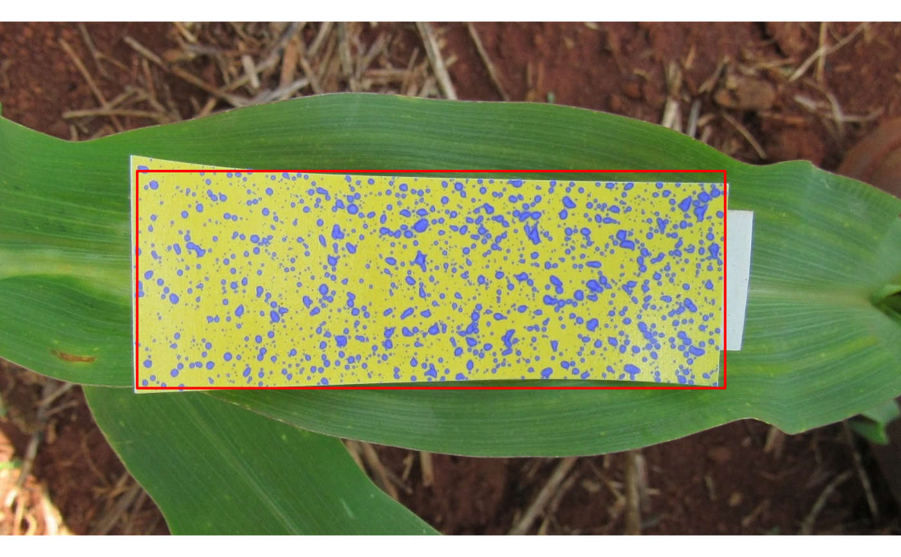
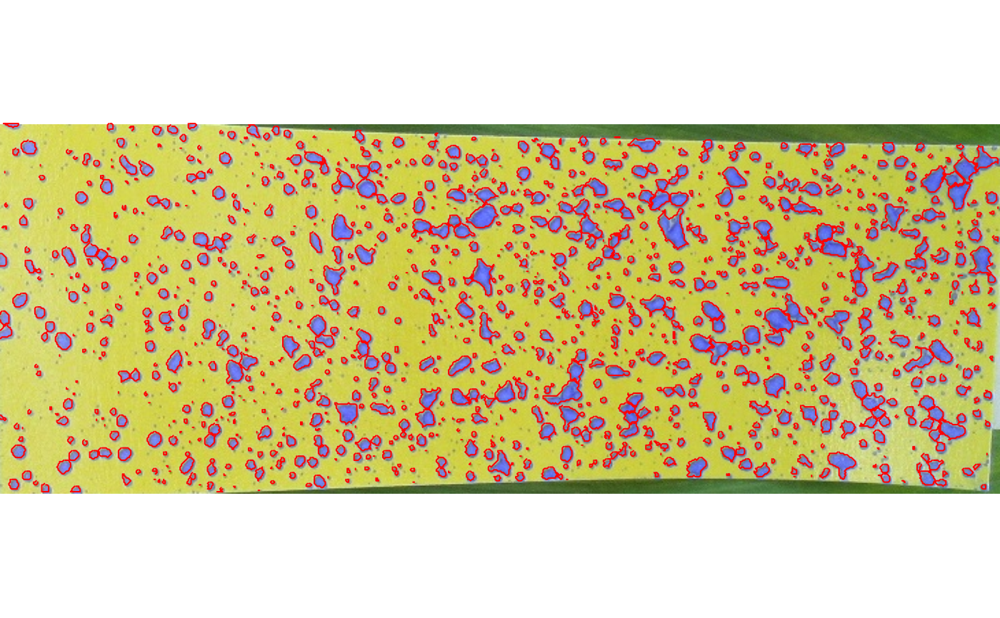

Create a document to report the results of the analyses of one or more water-sensitive paper.
makeReport(x)
| x | An object of class |
|---|
A HTML (hydropaper_report.html) will be generated and stored the working directory.
path <- system.file('images', 'field1.jpg', package = 'hydropaper') p1 <- detectPaper(path)  a <- analyzePaper(p1) makeReport(a) # check your working directory #> #> #> processing file: report.Rmd #> | | | 0% | |.......... | 14% #> ordinary text without R code #> #> | |.................... | 29% #> label: setup (with options) #> List of 1 #> $ include: logi FALSE #> #> | |.............................. | 43% #> ordinary text without R code #> #> | |........................................ | 57% #> label: unnamed-chunk-1 #> | |.................................................. | 71% #> ordinary text without R code #> #> | |............................................................ | 86% #> label: unnamed-chunk-2 #> | |......................................................................| 100% #> inline R code fragments #> #> #> output file: report.knit.md #> "C:/Users/User/AppData/Local/Pandoc/pandoc" +RTS -K512m -RTS report.knit.md --to html4 --from markdown+autolink_bare_uris+tex_math_single_backslash --output pandoc1da04fd31f22.html --lua-filter "C:\Users\User\Documents\R\win-library\4.1\rmarkdown\rmarkdown\lua\pagebreak.lua" --lua-filter "C:\Users\User\Documents\R\win-library\4.1\rmarkdown\rmarkdown\lua\latex-div.lua" --self-contained --variable bs3=TRUE --standalone --section-divs --template "C:\Users\User\Documents\R\win-library\4.1\rmarkdown\rmd\h\default.html" --highlight-style haddock --variable theme=united --include-in-header "C:\Users\User\AppData\Local\Temp\RtmpsV3Mau\rmarkdown-str1da040d135a4.html" --mathjax --variable "mathjax-url:https://mathjax.rstudio.com/latest/MathJax.js?config=TeX-AMS-MML_HTMLorMML" #> #> Output created: hydropaper_report.html 